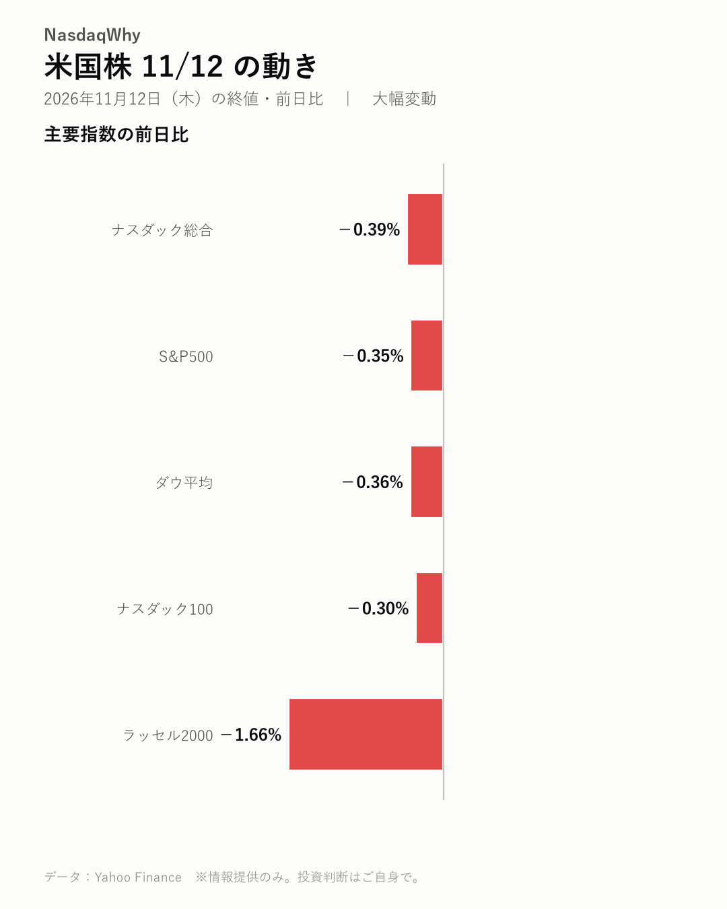
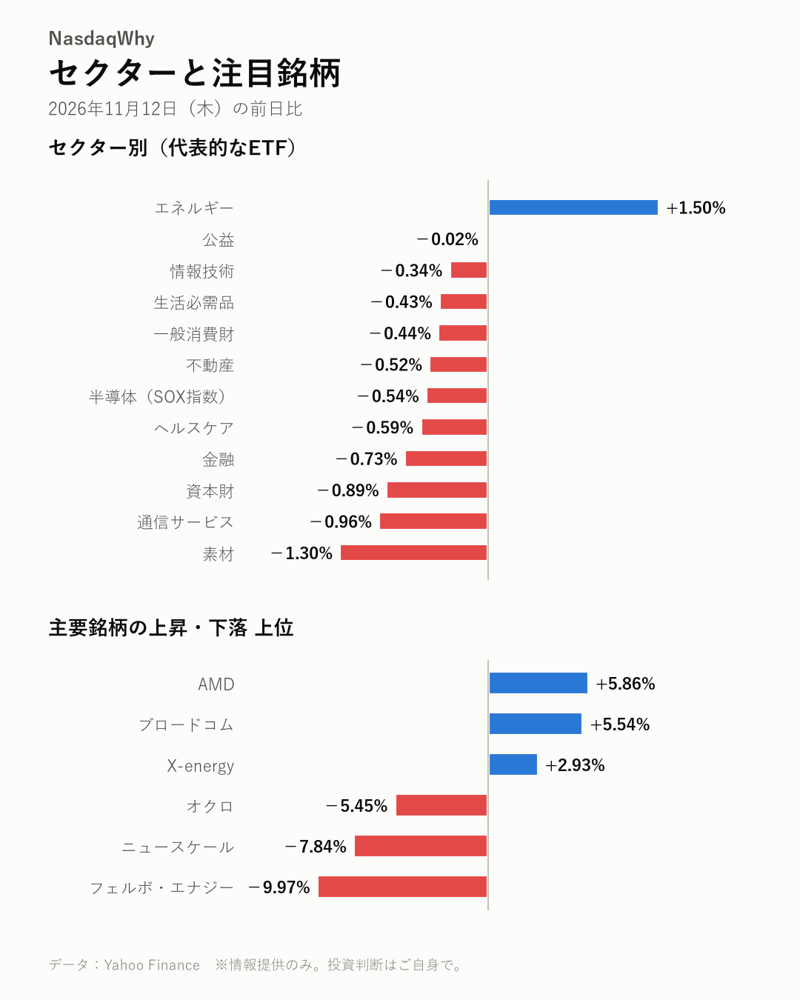

11/12の米国株：エヌビディアCEO辞任、なぜライバルのAMDは急伸した？
2026年11月12日（木）の米国市場（日本時間の翌朝更新） ｜ 大幅変動
今日の疑問
エヌビディアCEO辞任、なぜライバルのAMDは急伸した？
エヌビディアのフアンCEOが辞任し、同社株は-4.34%と急落した。経営の空白で顧客が調達先を分散するとの見方が広がり、AMDとブロードコムに買いが向かった。後任や顧客の発注への影響はまだ分からない。次に経営体制の発表を確かめたい。

主要指数
| 名前 | 終値 | 前日比 | 騰落率 |
|---|---|---|---|
| ナスダック総合 | 25,366.09 | -100.10 | -0.39% |
| S&P500 | 7,592.40 | -26.98 | -0.35% |
| ダウ平均 | 52,297.09 | -189.40 | -0.36% |
| ナスダック100 | 28,289.19 | -85.06 | -0.30% |
| ラッセル2000 | 2,799.06 | -47.20 | -1.66% |
なぜ動いた？
- エヌビディアのフアンCEOが辞任した。経営の先行きが見えないことを嫌気した売りが膨らみ、株価は-4.34%と急落した。（出典：Yahoo Finance、Yahoo Finance、Yahoo Finance、Investing.com）
- 顧客がAI半導体の調達先を分散するとの見方から、AMDとブロードコムに買いが入った。AMDは格上げも支えになった。（出典：Benzinga、TradingKey、CNBC、Yahoo Finance）
- 米利上げを確実視する見方から円が売られた。米10年債利回りも上昇し、ドル円は159.85円まで円安が進んだ。（出典：Nikkei Asia）
- ニュースケールは赤字決算と電力契約の未締結に加え、集団訴訟の案内が相次ぎ、-7.84%と下げた。（出典：PR Newswire、Foreign Policy Journal、Business Wire）
深掘り：大きく動いた背景
エヌビディアのジェンスン・フアンCEOが辞任し、半導体株の明暗がくっきり分かれた。エヌビディアは-4.34%と急落した。AMDは+5.86%、ブロードコムは+5.54%と買われた。SOX指数は-0.54%と小幅安にとどまった。 売りと買いのきっかけは同じ出来事だ。取締役会がフアン氏の解任を準備しているとの報道が先に出て、その後に辞任が決まった。TradingKeyは、経営の先行き不安から顧客がAI半導体の調達先を分散する可能性を指摘した。AMDは格上げを受けた。CNBCによると、理由はエヌビディアの「経営の空白」から恩恵を受けるとの見立てだ。ウィリアム・ブレアもAMDに好機があるとみる。 別の見方もある。トム・リー氏は、辞任があってもハイテク株への強気の見方は変わらないとの立場を示した。Mitradeは、AI関連の取引は崩れておらず、主役が入れ替わっただけと論じた。AMDはここ最近大きく値を下げており、戻りの面を指摘する記事もある。 指数では小型株のラッセル2000が-1.66%と下げが目立ったが、明確な材料は見当たらない。利上げを確実視する見方から米10年債利回りは上昇した。 まだ分からない点も多い。後任が誰になるのか。主要顧客の発注が実際に変わるのか。次にエヌビディアの経営体制の発表と、クラウド大手の調達方針を確かめたい。
セクター
エネルギーだけが+1.50%と上昇し、原油高と同じ方向に動いた。素材は-1.30%、資本財は-0.89%と下げが大きい。半導体のSOX指数は-0.54%と小幅安にとどまった。
- 騰落率の高い順：エネルギー +1.50%、公益 -0.02%、情報技術 -0.34%
- 騰落率の低い順：素材 -1.30%、通信サービス -0.96%、資本財 -0.89%

注目銘柄
AMDは+5.86%、ブロードコムは+5.54%と上昇した。エヌビディアは-4.34%と急落。原子力関連ではオクロが-5.45%、フェルボ・エナジーが-9.97%と売られたが、両社に明確な材料は見当たらない。
- 上昇：AMD（AMD）+5.86%、ブロードコム（AVGO）+5.54%、X-energy（XE）+2.93%
- 下落：フェルボ・エナジー（FRVO）-9.97%、ニュースケール（SMR）-7.84%、オクロ（OKLO）-5.45%
半導体トピック
- 台湾の部材商社は、ABF基板の不足が長引くとみる。（digitimes）
- SK hynixは次世代HBMの歩留まりを高め、サムスンやマイクロンと競う。（Chosunbiz）
- サムスン電子とAMDは、チップの検査工程の改善で手を組んだ。（digitimes）
関連市場
| 名前 | 終値 | 前日比 | 騰落率 |
|---|---|---|---|
| 米10年債利回り | 5.103% | +0.105pt | ― |
| ドル円 | 159.85 | +1.15 | +0.72% |
| 金先物 | 3,877.50 | -123.00 | -3.07% |
| 原油先物(WTI) | 88.92 | +2.39 | +2.76% |
| ビットコイン | 71,533.84 | -2,430.62 | -3.29% |
米10年債利回りは5.103%に上昇し、ドル円は+0.72%と円安に振れた。原油先物は+2.76%と上げ、金先物は-3.07%、ビットコインは-3.29%と下げた。金とビットコインの下げに明確な材料は見当たらない。
今後の注目
- 12/9（水） FOMCの金融政策発表。利上げを確実視する見方が実際の判断と合うか（公式発表、Nikkei Asia）
- エヌビディアのフアンCEO辞任後の後任選びと新しい経営体制（Yahoo Finance、Yahoo Finance）
- ニュースケールの電力契約（TVA）の締結と、集団訴訟の行方（PR Newswire、Foreign Policy Journal）
出典（見出し）
- Yahoo Finance：AMD, Broadcom stocks jump as Nvidia CEO Jensen Huang resigns（記事）
- Yahoo Finance：AMD, Broadcom gain after reports say Nvidia board preparing to oust Huang（記事）
- Yahoo Finance：Stock Market Midday, Nov. 12: Nvidia CEO Resigns, AMD Surges as Wall Street Edges Higher（記事）
- Investing.com：AMD, Broadcom shares rally as Nvidia CEO Huang resigns（記事）
- Benzinga：AMD, Broadcom Stocks Gain as Investors Rotate Away From Nvidia: What’s Going On?（記事）
- TradingKey：Nvidia Falls Over 7% Premarket, AMD and Broadcom Buck Trend to Gain Over 2%: Jensen Huang’s Future May Drive Customers to Diversify Chip Purchases（記事）
- CNBC：AMD upgraded because it will benefit from Nvidia's 'leadership vacuum'（記事）
- Yahoo Finance：AMD Has Opportunity As NVDA Faces Scrutiny And Potential Leadership Vacuum, William Blair Says — Sees Runway For Shares（記事）
- Nikkei Asia：Fed hike 'certainty' pushes Asian currencies lower with yen down near 160（記事）
- PR Newswire：SMR Investors Have Opportunity to Lead NuScale Power Corporation Securities Fraud Lawsuit（記事）
- Foreign Policy Journal：NuScale Power (NYSE: SMR) Posts $43.65M Quarterly Loss As TVA Power Deal Remains Unsigned（記事）
- Business Wire：Investor Alert: Robbins LLP Informs Investors of the NuScale Power Corporation Class Action Lawsuit（記事）
- digitimes：ABF substrate shortage to last through 2028 as Wah Lee targets next-gen products（記事）
- Chosunbiz：SK hynix tops 70% HBM4 yield, sharpening race with Samsung and Micron（記事）
- digitimes：Samsung, AMD team up to upgrade chip testing（記事）
- Yahoo Finance：AMD, Broadcom rally as Nvidia faces a major leadership test（記事）
- Yahoo Finance：AMD and Broadcom emerge as winners amid Nvidia leadership uncertainty（記事）
データ：Yahoo Finance